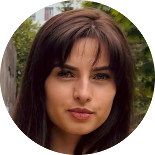

|  | Kristine KirakosianiCONTACT ME |
|
2018-2020 Master, University of Nantes, European and International project management 2018-DU University of Nantes , I-FLE French Studies C1 2013-2017 Licence, Grigol Robakidze University, Tbilissi Public Administration and politics 2016 Abroid Semester, Erasmus+ program Political science, Nantes |
| HTML | ⭐⭐⭐ |
| CSS | ⭐⭐ |
| JSS | ⭐⭐ |
| Bootsrap | ⭐ |
| DOM | ⭐ |
| Node | ⭐ |
| EU fund raising |
⭐⭐⭐⭐⭐ |
| languages: English, French, Georgian, Russian |
⭐⭐⭐⭐⭐ |
| CHARGÉE DE PROJETS EUROPÉENS AC3A – ASSOCIATION DES CHAMBRES D’AGRICULTURE DE L’ARC ATLANTIQUE, 2020 NOVEMBRE- 2022 AVRIL |
|
| CHARGÉE DE PROJETS EUROPÉENS ELEO CONSEIL 2020 FÉVRIER-JUILLET 2019 FEVRIER - MAI |
|
| TRÉSORIÈRE ADJOINTE ASSOCIATION NANTES-TBILISSI, 2020 JANVIER-PRESENT |
|
| CHARGÉE EVENEMENTIEL ASSOCIATION 2AMI 2019 JANVIER-2020 JANVIER |
|
| CHARGÉE EVENEMENTIEL ASSOCIATION 2AMI 2019 JANVIER-2020 JANVIER |
|